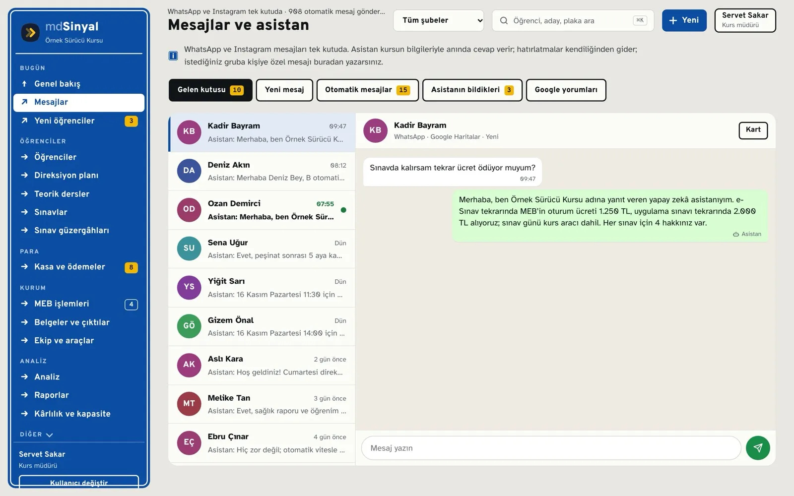

Adaylar ve öğrencilerle iletişim kursun kendi WhatsApp numarasından yürür.
Ders, taksit ve kayıt görüşmesi hatırlatmaları kursun kendi hattından gönderilir. Ders değişikliği isteyen öğrenciye asistan, kursta mdSinyal açıkken birkaç dakika içinde 24 saat kuralına uygun boş saatleri sunar; öğrencinin seçtiği saat plana işlenir. Diğer bütün mesajlar mdSinyal’in gelen kutusunda toplanır, ilgili personel yanıtlar.
- Kursun kendi WhatsApp Business hattı
- Ders değişikliğinde uygun saat önerisi
- Bütün yazışmalar tek gelen kutusunda
WhatsApp asistanı
